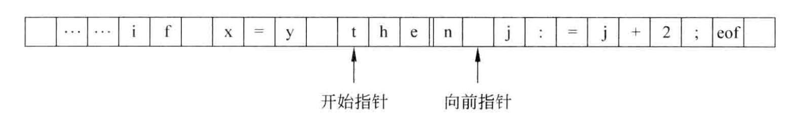
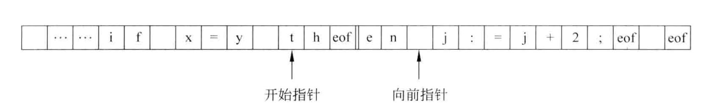
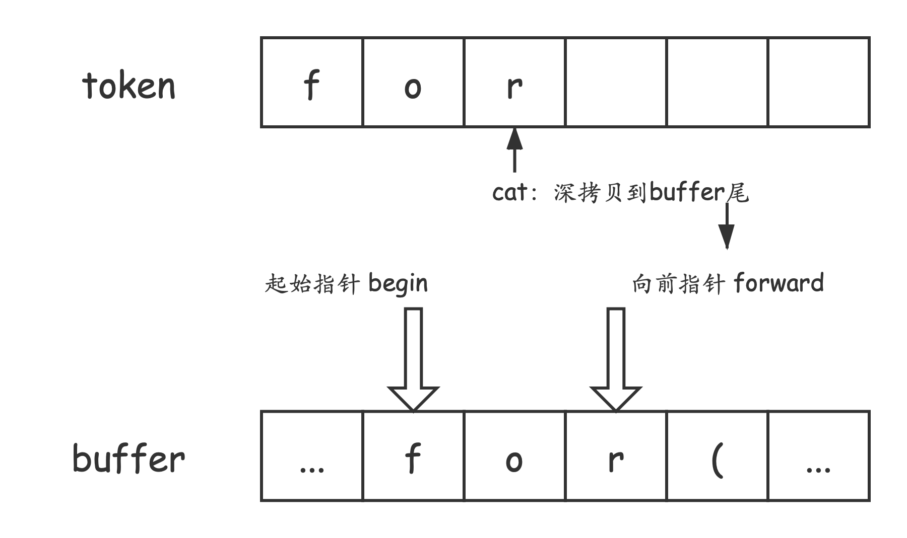
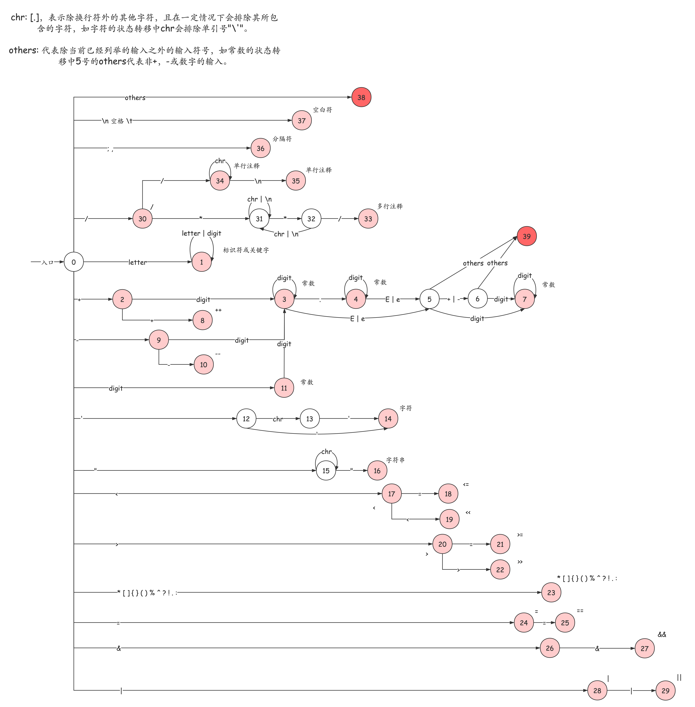

词法分析在编译过程中的定位
词法分析作为独立的一遍：
将词法分析程序分离，便于语法分析程序专注于语法处理，简化设计；不用考虑上层分析程序，可构造更有效的词法分析程序，提高效率；同时也加强了编译程序的的可移植性。
词法分析作为语法分析的子程序：
避免了中间文件的产生；省去了取送符号的操作；提高编译程序的效率。
词法分析与语法分析作为协同程序，两者处于同一遍中，交叉进行，以生产者和消费者的关系同时进行。
词法分析程序的输入
双缓冲输入模式的介绍：

缓冲区分为左右两半，开始指针和向前指针在初始阶段都指向下一个单词符号的起始字符，之后向前指针向前扫描，当向前指针到达左半区的终点时，则填充右半区，即将原先左半区开始指针到向前指针之间的内容移动到右半区来；当向前指针到达右半区的终点时，则填充左半区，注意左右半区是首尾连接的循环结构。

缓冲和单词的关系：

在左右半区终点处添加了eof标记后，这里给出伪代码：
while(...){ 向前指针移动一个位置 if(向前指针指向EOF) { if(向前指针在左半区的终点) { 向前指针向前移动一个位置 // 离开左半区的终点 填充右半区 } else if(向前指针在右半区终点) { 向前指针指向缓冲区的开始位置 填充左半区 } else { 终止词法分析 } } }
词法分析程序的输出——记号
记号的种类：1. 关键字；2. 标识符；3. 常数；4. 运算符；5. 分界符。
分析出记号的方式：记号的模式，如记号的正则式。
词法分析的结果：记号和其对应的属性。
不同的记号的属性：
记号的文法表示，如下：
标识符：
常数——整数：
常数——无符号数：
其右线性文法表达式为：
运算符——关系运算符：
运算符——赋值号：
运算符——算术运算符：
这里给出设计的状态转换图：
注意：
- 这里的标识符在识别后会进入关键字表中查询，如果查找到，则记录为关键字。
- 这里的浅红色的标记，表示该代码串被该模式分支识别；这里的深红色标记，表示该模式分支无法识别该代码串。

这里给出关于C语言的词法分析程序（由于这里考虑的是C语言中的主要词法，程序可能存在某些不完善之处）：
words_analysis.h
x/*------ relation operators ------*/
/*------ assign operators ------*/
/*------ algorithm operators ------*//*------ keywords ------*/
/*------ constant ------*/
/*------ identifier ------*/
/*------ separator ------*/
/*------ comment ------*/
/*------ whitespace ------*/
/*------ error ------*/
// 关键字表大小const static uint keywds_table_size = 20;// 关键字表const static char *keywds_table[] = {"if", "else", "when", "switch", "case", "for", "void", "char", "unsigned", "int", "short", "long", "float", "double", "return","extern","static", "const", "break", "continue" };
const static char *types[] = {"operator", "keyword", "constant", "identifier", "separator", "comment", "whitspace" };
// 判断当前字符是否为字母或下划线bool is_letter();// 判断当前字符是否为数字bool is_digit();// 判断当前单词是否为关键字bool is_keywd();// 判断当前字符是否为非换行符bool is_chr();// buffer后退一个字符int retract();// 从buffer中读取字符int get_char();// 将当前字符连接到当前单词后int cat();// 判断自动机分支char branch();// 将当前单词的属性进行封装，并提交到单词表int fetch_word(uint type);// 初始化单词缓冲区buffer和tokenint init_buffer(char *filepath);// 词法分析int analysis();// 词法分析结束判断bool done();// 输出结果统计信息void print_statistics();
/*---------------- analysis_state.c ----------------*/void state_0();void state_1();void state_2();void state_3();void state_4();void state_5();void state_6();void state_7();void state_8();void state_9();void state_10();void state_11();void state_12();void state_13();void state_14();void state_15();void state_16();void state_17();void state_18();void state_19();void state_20();void state_21();void state_22();void state_23();void state_24();void state_25();void state_26();void state_27();void state_28();void state_29();void state_30();void state_31();void state_32();void state_33();void state_34();void state_35();void state_36();void state_37();void state_38();void state_39();
words_analysis.c
xxxxxxxxxx
const static ulong buf_size = 1024 * 1024;const static ulong tok_size = 1024;static int fd;static ulong code_size;static char buffer[buf_size];static char token[tok_size];static ulong tok_len;static char *begin;static char *forward;static struct word tempwd;
// 字符个数ulong chars_cnt = 0;// 行数ulong line_cnt = 1;// 单词个数ulong words_cnt = 0;// 常量个数ulong consts_cnt = 0;// 标识符个数ulong ids_cnt = 0;// 关键字个数ulong keywds_cnt = 0;// 运算符个数ulong opts_cnt = 0;// 分隔符个数ulong septs_cnt = 0;// 注释个数ulong cmts_cnt = 0;// 空格个数ulong blks_cnt = 0;// 换行符个数ulong lfds_cnt = 0;// 制表符个数ulong tabs_cnt = 0;// 错误个数ulong errs_cnt = 0;// 当前列号ulong current_row = 1;// 状态序号uint state = 0;// 当前读取的字符char C;
bool is_letter(){ if((C <= 'Z' && C >= 'A') || (C >= 'a' && C <= 'z') || C == '_') { return true; } return false;}
bool is_digit(){
if(C <= '9' && C >= '0') { return true; } return false;}
bool is_chr(){ if(C == '\n') { return false; } return true;}
bool is_keywd(){ bool flag = true; for(int i = 0; i < keywds_table_size && flag; i++) { if(strcmp(token, keywds_table[i]) == 0) { flag = false; } } if(flag == false) { return true; } return false;}
int init_buffer(){ // 打开文件 fd = open("example.c", O_RDONLY); // 读取文件数据 code_size = read(fd, buffer, buf_size); // 初始化开始和向前指针 tok_len = 0; begin = buffer; forward = begin; // 关闭文件 close(fd); return 0;}
int get_char(){ C = *forward; forward++; chars_cnt++; current_row++; if(chars_cnt >= code_size) { return -1; } return 0;}
int cat(){ token[tok_len] = C; tok_len++; return 0;}
int fetch_word(uint type){ switch (type) { case OPERATOR: opts_cnt++; words_cnt++; break; case KEYWORD: keywds_cnt++; words_cnt++; break; case CONSTANT: consts_cnt++; words_cnt++; break; case ID: ids_cnt++; words_cnt++; break; case SEPARATOR: septs_cnt++; words_cnt++; break; case COMMENT: cmts_cnt++; break; case BLANK: blks_cnt++; break; case FEED: lfds_cnt++; break; case TAB: tabs_cnt++; break; case ERROR: errs_cnt++; break; } tempwd.type = type; tempwd.lineno = line_cnt; tempwd.rowno = current_row; strcpy(tempwd.value, token); insert_table(&tempwd); memset(token, 0, tok_len); tok_len = 0; return 0;}
int main(int argc, char *argv[]){ init_buffer(); init_words_table(); // do { // get_char(); // printf("%c", C); // } while(!done()); analysis(); print_table(); print_statistics(); return 0;}
char branch(){ if(is_letter()) { return IS_LETTER; } else if(is_digit()) { return IS_DIGIT; } return C;}
int retract(){ forward--; current_row--; chars_cnt--; return 0;}
bool done(){ if(chars_cnt <= code_size) { return false; } return true;}
int analysis(){ state = 0; while(!done()) { // printf("code size\t%llu chars_cnt\t%llu",code_size,chars_cnt); switch (state) { case 0: state_0(); break; case 1: state_1(); break; case 2: state_2(); break; case 3: state_3(); break; case 4: state_4(); break; case 5: state_5(); break; case 6: state_6(); break; case 7: state_7(); break; case 8: state_8(); break; case 9: state_9(); break; case 10: state_10(); break; case 11: state_11(); break; case 12: state_12(); break; case 13: state_13(); break; case 14: state_14(); break; case 15: state_15(); break; case 16: state_16(); break; case 17: state_17(); break; case 18: state_18(); break; case 19: state_19(); break; case 20: state_20(); break; case 21: state_21(); break; case 22: state_22(); break; case 23: state_23(); break; case 24: state_24(); break; case 25: state_25(); break; case 26: state_26(); break; case 27: state_27(); break; case 28: state_28(); break; case 29: state_29(); break; case 30: state_30(); break; case 31: state_31(); break; case 32: state_32(); break; case 33: state_33(); break; case 34: state_34(); break; case 35: state_35(); break; case 36: state_36(); break; case 37: state_37(); break; case 38: state_38(); break; case 39: state_39(); break; } } return 0;}
void print_statistics(){ printf("-----------------------------\n"); printf(" Words Analysis Statistics: \n"); printf("-----------------------------\n"); printf("* line count \t%llu\n", line_cnt); printf("* character count\t%llu\n", chars_cnt); printf("* word count \t%llu\n", words_cnt); printf("* operator count\t%llu\n", opts_cnt); printf("* constant count\t%llu\n", consts_cnt); printf("* identifier count\t%llu\n", ids_cnt); printf("* keywords count\t%llu\n", keywds_cnt); printf("* separator count\t%llu\n", septs_cnt); printf("* comment count \t%llu\n",cmts_cnt); printf("* blank count \t%llu\n",blks_cnt); printf("* line feed count\t%llu\n",lfds_cnt); printf("* tab count \t%llu\n", tabs_cnt); printf("* error count \t%llu\n",errs_cnt); printf("-----------------------------\n");
}words_table.h
xxxxxxxxxxconst static ulong max_entry = 1024 * 8;const static uint value_max_len = 1024;
struct word{ // 单词的类别 uint type; // 单词所在行数 uint lineno; // 单词所在列数 uint rowno; // 单词的值 char value[value_max_len];};
// 初始化单词表int init_words_table();// 向单词表中插入某个单词表项int insert_table(struct word *unit);// 打印单词表中的所有内容int print_table();words_table.c
xxxxxxxxxx
char *types[] = {"operator", "keyword", "constant", "identifier", "separator", "comment", "blankspace", "linefeed", "tab", "error" };
static struct word words_table[max_entry];static uint current;
int init_words_table(){ current = 0; return 0;}
int insert_table(struct word *unit){ words_table[current] = *unit; current++; return 0;}
int print_table(){ for(int i = 0; i < current; i++) { printf("%d:%d <%s,\"%s\">\n", words_table[i].lineno, words_table[i].rowno, types[words_table[i].type], words_table[i].value); } return 0;}analysis_state.c
xxxxxxxxxx
const static ulong buf_size = 1024 * 1024;const static ulong tok_size = 1024;static int fd;static ulong code_size;static char buffer[buf_size];static char token[tok_size];static ulong tok_len;static char *begin;static char *forward;static struct word tempwd;
// 字符个数ulong chars_cnt = 0;// 行数ulong line_cnt = 1;// 单词个数ulong words_cnt = 0;// 常量个数ulong consts_cnt = 0;// 标识符个数ulong ids_cnt = 0;// 关键字个数ulong keywds_cnt = 0;// 运算符个数ulong opts_cnt = 0;// 分隔符个数ulong septs_cnt = 0;// 注释个数ulong cmts_cnt = 0;// 空格个数ulong blks_cnt = 0;// 换行符个数ulong lfds_cnt = 0;// 制表符个数ulong tabs_cnt = 0;// 错误个数ulong errs_cnt = 0;// 当前列号ulong current_row = 1;// 状态序号uint state = 0;// 当前读取的字符char C;
bool is_letter(){ if((C <= 'Z' && C >= 'A') || (C >= 'a' && C <= 'z') || C == '_') { return true; } return false;}
bool is_digit(){
if(C <= '9' && C >= '0') { return true; } return false;}
bool is_chr(){ if(C == '\n') { return false; } return true;}
bool is_keywd(){ bool flag = true; for(int i = 0; i < keywds_table_size && flag; i++) { if(strcmp(token, keywds_table[i]) == 0) { flag = false; } } if(flag == false) { return true; } return false;}
int init_buffer(char *filepath){ // 打开文件 fd = open(filepath, O_RDONLY); // 读取文件数据 code_size = read(fd, buffer, buf_size); // 初始化开始和向前指针 tok_len = 0; begin = buffer; forward = begin; // 关闭文件 close(fd); return 0;}
int get_char(){ C = *forward; forward++; chars_cnt++; current_row++; if(chars_cnt >= code_size) { return -1; } return 0;}
int cat(){ token[tok_len] = C; tok_len++; return 0;}
int fetch_word(uint type){ switch (type) { case OPERATOR: opts_cnt++; words_cnt++; break; case KEYWORD: keywds_cnt++; words_cnt++; break; case CONSTANT: consts_cnt++; words_cnt++; break; case ID: ids_cnt++; words_cnt++; break; case SEPARATOR: septs_cnt++; words_cnt++; break; case COMMENT: cmts_cnt++; break; case BLANK: blks_cnt++; break; case FEED: lfds_cnt++; break; case TAB: tabs_cnt++; break; case ERROR: errs_cnt++; break; } tempwd.type = type; tempwd.lineno = line_cnt; tempwd.rowno = current_row; strcpy(tempwd.value, token); insert_table(&tempwd); memset(token, 0, tok_len); tok_len = 0; return 0;}
int main(int argc, char *argv[]){ if(argc != 3 || strcmp(argv[1],"-s")) { printf("arguement error!\n"); printf("format: -s ${source filepath}!\n"); return -1; } init_buffer(argv[2]); init_words_table(); analysis(); print_table(); print_statistics(); return 0;}
char branch(){ if(is_letter()) { return IS_LETTER; } else if(is_digit()) { return IS_DIGIT; } return C;}
int retract(){ forward--; current_row--; chars_cnt--; return 0;}
bool done(){ if(chars_cnt <= code_size) { return false; } return true;}
int analysis(){ state = 0; while(!done()) { switch (state) { case 0: state_0(); break; case 1: state_1(); break; case 2: state_2(); break; case 3: state_3(); break; case 4: state_4(); break; case 5: state_5(); break; case 6: state_6(); break; case 7: state_7(); break; case 8: state_8(); break; case 9: state_9(); break; case 10: state_10(); break; case 11: state_11(); break; case 12: state_12(); break; case 13: state_13(); break; case 14: state_14(); break; case 15: state_15(); break; case 16: state_16(); break; case 17: state_17(); break; case 18: state_18(); break; case 19: state_19(); break; case 20: state_20(); break; case 21: state_21(); break; case 22: state_22(); break; case 23: state_23(); break; case 24: state_24(); break; case 25: state_25(); break; case 26: state_26(); break; case 27: state_27(); break; case 28: state_28(); break; case 29: state_29(); break; case 30: state_30(); break; case 31: state_31(); break; case 32: state_32(); break; case 33: state_33(); break; case 34: state_34(); break; case 35: state_35(); break; case 36: state_36(); break; case 37: state_37(); break; case 38: state_38(); break; case 39: state_39(); break; } } return 0;}
void print_statistics(){ printf("-----------------------------\n"); printf(" Words Analysis Statistics: \n"); printf("-----------------------------\n"); printf("* line count \t%llu\n", line_cnt); printf("* character count\t%llu\n", chars_cnt); printf("* word count \t%llu\n", words_cnt); printf("* operator count\t%llu\n", opts_cnt); printf("* constant count\t%llu\n", consts_cnt); printf("* identifier count\t%llu\n", ids_cnt); printf("* keywords count\t%llu\n", keywds_cnt); printf("* separator count\t%llu\n", septs_cnt); printf("* comment count \t%llu\n",cmts_cnt); printf("* blank count \t%llu\n",blks_cnt); printf("* line feed count\t%llu\n",lfds_cnt); printf("* tab count \t%llu\n", tabs_cnt); printf("* error count \t%llu\n",errs_cnt); printf("-----------------------------\n");
}这里给出测试用例：
example.c
xxxxxxxxxx/* example.c */double a = 1.e1;double b = 1.e2;// errordouble c = 1.e;// mainint main(void){ a = a * b; a = a + b;}给出编译运行脚本
compile-C.sh
xxxxxxxxxxgcc words_analysis.c words_table.c analysis_state.c -o words_analysis./words_analysis运行结果：
xxxxxxxxxx1:18 <comment,"/* example.c */">1:19 <linefeed,"">2:7 <keyword,"double">2:8 <blankspace," ">2:9 <identifier,"a">2:10 <blankspace," ">2:11 <operator,"=">2:12 <blankspace," ">2:16 <constant,"1.e1">2:17 <separator,";">2:18 <linefeed,"">3:7 <keyword,"double">3:8 <blankspace," ">3:9 <identifier,"b">3:10 <blankspace," ">3:11 <operator,"=">3:12 <blankspace," ">3:16 <constant,"1.e2">3:17 <separator,";">3:18 <linefeed,"">5:1 <comment,"// error">5:7 <keyword,"double">5:8 <blankspace," ">5:9 <identifier,"c">5:10 <blankspace," ">5:11 <operator,"=">5:12 <blankspace," ">5:16 <error,"1.e;">5:17 <linefeed,"">7:1 <comment,"// main">7:4 <keyword,"int">7:5 <blankspace," ">7:9 <identifier,"main">7:10 <operator,"(">7:14 <keyword,"void">7:15 <operator,")">7:16 <linefeed,"">8:2 <operator,"{">8:3 <linefeed,"">9:2 <blankspace," ">9:3 <blankspace," ">9:4 <blankspace," ">9:5 <blankspace," ">9:6 <identifier,"a">9:7 <blankspace," ">9:8 <operator,"=">9:9 <blankspace," ">9:10 <identifier,"a">9:11 <blankspace," ">9:12 <operator,"*">9:13 <blankspace," ">9:14 <identifier,"b">9:15 <separator,";">9:16 <linefeed,"">10:2 <blankspace," ">10:3 <blankspace," ">10:4 <blankspace," ">10:5 <blankspace," ">10:6 <identifier,"a">10:7 <blankspace," ">10:8 <operator,"=">10:9 <blankspace," ">10:10 <identifier,"a">10:11 <blankspace," ">10:12 <operator,"+">10:13 <blankspace," ">10:14 <identifier,"b">10:15 <separator,";">10:16 <linefeed,"">11:2 <operator,"}">----------------------------- Words Analysis Statistics: -----------------------------* line count 11* character count 134* word count 32* operator count 11* constant count 2* identifier count 10* keywords count 5* separator count 4* comment count 3* blank count 26* line feed count 8* tab count 0* error count 1-----------------------------以上是使用C语言编写的词法分析程序，现在使用LEX编写词法分析器生成程序。
这里按照C语言语法给出各种记号的正则表达式：
xxxxxxxxxx/* 基本元素 basic */ // 换行符和空白符 delim [ \n\t] // 空白区域 ws [delim]+ // 字母和下划线 letter [A-Za-z_] // 数字 digit [0-9]
/* 常量 constant */ // 定点数 number [+-]?{digit}+([\.]{digit}+)?([Ee][+-]?{digit}+)? // 字符串 str ("[\s\S]*") // 字符 chr ('[\s\S]?')
/* 标识符 identifier */id {letter}[{letter}{digit}]*
/* 运算符 operator */ // +,-,*,/,(,){,},%,&,|,^,!,~,=,<,>,<=,>=,==,: // 由于运算符语法是固定的，故不需要使用正则表达式描述，直接使用字符串描述即可
/* 关键字 keyword */ // if,else,when,for,do,void,unsigned,char,short,int,float,long,double,return, // switch,case,break,static,extern,const,continue // 由于关键字语法是固定的，故不需要使用正则表达式描述，直接使用字符串描述即可 /* 分隔符 separator */ // ,和; // 由于分隔符语法是固定的，故不需要使用正则表达式描述，直接使用字符串描述即可
/* 注释 comment */ // 单行注释 sgl_cmt (//[\s\S]*) // 多行注释，限制符后跟？，表示最短匹配 mul_cmt (/\*(.|\s)*?\*/)这里给出LEX程序：
words_analysis.l
xxxxxxxxxx%{
/*------ relation operators ------*/
/*------ assign operators ------*/
/*------ algorithm operators ------*//*------ keywords ------*/
/*------ constant ------*/
/*------ whitespace ------*/
/*------ identifier ------*/
/*------ comment ------*/
/*------ separator ------*/
// 行数int line_cnt = 0;// 字符个数int chars_cnt = 0;// 单词个数int words_cnt = 0;// 常量个数int consts_cnt = 0;// 标识符个数int ids_cnt = 0;// 关键字个数int keywds_cnt = 0;// 运算符个数int opts_cnt = 0;// 分隔符个数int septs_cnt = 0;// 注释个数int cmts_cnt = 0;// 空白符个数int ws_cnt = 0;// 其他无法识别符号数int ilegs_cnt = 0;%}%option yylineno/*------ Regular Expressions ------*/
delim [ \t\n]ws {delim}+digit [0-9]letter [A-Za-z_]id {letter}({letter}|{digit})*/* [+-]?[0-9]+([\.][0-9]+)?([Ee][+-]?[0-9]+)? *//* number [+-]?{digit}+([\.]{digit})?([Ee][+-]?[{digit}+)? */number [+-]?[0-9]+[.]?([0-9]+)?([Ee][+-]?[0-9]+)?str (\"(.*)\")chr (\'[.]\')
sgl_cmt (\/\/.*[\n])mul_cmt (\/\*((.|\n)*?)\*\/)
others5 [^0-9+-]others6 [^0-9]illeg5 [+-]?[0-9]+[.]?([0-9]+)?([Ee]{others5})?illeg6 [+-]?[0-9]+[.]?([0-9]+)?([Ee][+-]?{others6})?
/*------ modes and operations ------*/%%"<" {return (LT);}"<=" {return (LE);}">" {return (GT);}">=" {return (GE);}"==" {return (EQ);}"<<" {return (SHL);}">>" {return (SHR);}"+" {return (ADD);}"-" {return (DEC);}"*" {return (MUL);}"/" {return (DIV);}"(" {return (LB);}")" {return (RB);}"{" {return (BLB);}"}" {return (BRB);}"&" {return (AND);}"|" {return (OR);}"!" {return (NOT);}"^" {return (XOR);}"~" {return (REVS);}"[" {return (MLB);}"]" {return (MRB);}"\"" {return (QUT);}"'" {return (SQUT);}":" {return (COLON);}"=" {return (AS);}
"if" {return (IF);}"else" {return (ELSE);} "while" {return (WHILE);}"for" {return (FOR);}"switch" {return (SWITCH);}"case" {return (CASE);}"break" {return (BREAK);}"void" {return (VOID);}"unsigned" {return (UNSIG);}"char" {return (CHAR);}"short" {return (SHORT);}"int" {return (INT);}"float" {return (FLOAT);}"long" {return (LONG);}"double" {return (DOUBLE);}
";" {return (SEMCOL);}"," {return (COMMA);}
{ws} {return (WS);}
{number} {return (NUM);}{str} {return (STR);}{chr} {return (CHR);}
{id} {return (ID);}
{sgl_cmt} {return (SCMT);}{mul_cmt} {return (MCMT);}
{illeg5} {return (ILEG);}{illeg6} {return (ILEG);}%%
void word_storge(int c){ switch(c) { case LT:opts_cnt++;fprintf(stdout, "%d: <operator:\t\"%s\">\n", yylineno, yytext); break; case LE:opts_cnt++;fprintf(stdout, "%d: <operator:\t\"%s\">\n", yylineno, yytext); break; case GT: break; case GE:opts_cnt++;fprintf(stdout, "%d: <operator:\t\"%s\">\n", yylineno, yytext); break; case EQ:opts_cnt++;fprintf(stdout, "%d: <operator:\t\"%s\">\n", yylineno, yytext); break; case SHL:opts_cnt++;fprintf(stdout, "%d: <operator:\t\"%s\">\n", yylineno, yytext); break; case SHR:opts_cnt++;fprintf(stdout, "%d: <operator:\t\"%s\">\n", yylineno, yytext); break; case ADD:opts_cnt++;fprintf(stdout, "%d: <operator:\t\"%s\">\n", yylineno, yytext); break; break; case DEC:opts_cnt++;fprintf(stdout, "%d: <operator:\t\"%s\">\n", yylineno, yytext); break; case MUL: break; case DIV:opts_cnt++;fprintf(stdout, "%d: <operator:\t\"%s\">\n", yylineno, yytext); break; case LB:opts_cnt++;fprintf(stdout, "%d: <operator:\t\"%s\">\n", yylineno, yytext); break; case RB:opts_cnt++;fprintf(stdout, "%d: <operator:\t\"%s\">\n", yylineno, yytext); break; case BLB:opts_cnt++;fprintf(stdout, "%d: <operator:\t\"%s\">\n", yylineno, yytext); break; case BRB: break; case AND:opts_cnt++;fprintf(stdout, "%d: <operator:\t\"%s\">\n", yylineno, yytext); break; case OR:opts_cnt++;fprintf(stdout, "%d: <operator:\t\"%s\">\n", yylineno, yytext); break; case NOT:opts_cnt++;fprintf(stdout, "%d: <operator:\t\"%s\">\n", yylineno, yytext); break; case XOR:opts_cnt++;fprintf(stdout, "%d: <operator:\t\"%s\">\n", yylineno, yytext); break; case REVS:opts_cnt++;fprintf(stdout, "%d: <operator:\t\"%s\">\n", yylineno, yytext); break; case AS:opts_cnt++;fprintf(stdout, "%d: <operator:\t\"%s\">\n", yylineno, yytext); break; case SQUT:opts_cnt++;fprintf(stdout, "%d: <operator:\t\"%s\">\n", yylineno, yytext); break; case QUT:opts_cnt++;fprintf(stdout, "%d: <operator:\t\"%s\">\n", yylineno, yytext); break; case MLB:opts_cnt++;fprintf(stdout, "%d: <operator:\t\"%s\">\n", yylineno, yytext); break; case MRB:opts_cnt++;fprintf(stdout, "%d: <operator:\t\"%s\">\n", yylineno, yytext); break; case COLON:opts_cnt++;fprintf(stdout, "%d: <operator:\t\"%s\">\n", yylineno, yytext); break;
case IF:keywds_cnt++;fprintf(stdout, "%d: <keyword:\t\"%s\">\n", yylineno, yytext); break; case ELSE:keywds_cnt++;fprintf(stdout, "%d: <keyword:\t\"%s\">\n", yylineno, yytext); break; case WHILE:keywds_cnt++;fprintf(stdout, "%d: <keyword:\t\"%s\">\n", yylineno, yytext); break; case FOR:keywds_cnt++;fprintf(stdout, "%d: <keyword:\t\"%s\">\n", yylineno, yytext); break; case SWITCH:keywds_cnt++;fprintf(stdout, "%d: <keyword:\t\"%s\">\n", yylineno, yytext); break; case CASE:keywds_cnt++;fprintf(stdout, "%d: <keyword:\t\"%s\">\n", yylineno, yytext); break; case BREAK:keywds_cnt++;fprintf(stdout, "%d: <keyword:\t\"%s\">\n", yylineno, yytext); break; case VOID:keywds_cnt++;fprintf(stdout, "%d: <keyword:\t\"%s\">\n", yylineno, yytext); break; case UNSIG:keywds_cnt++;fprintf(stdout, "%d: <keyword:\t\"%s\">\n", yylineno, yytext); break; case CHAR:keywds_cnt++;fprintf(stdout, "%d: <keyword:\t\"%s\">\n", yylineno, yytext); break; case SHORT:keywds_cnt++;fprintf(stdout, "%d: <keyword:\t\"%s\">\n", yylineno, yytext); break; case INT:keywds_cnt++;fprintf(stdout, "%d: <keyword:\t\"%s\">\n", yylineno, yytext); break; case FLOAT:keywds_cnt++;fprintf(stdout, "%d: <keyword:\t\"%s\">\n", yylineno, yytext); break; case LONG:keywds_cnt++;fprintf(stdout, "%d: <keyword:\t\"%s\">\n", yylineno, yytext); break; case DOUBLE:keywds_cnt++;fprintf(stdout, "%d: <keyword:\t\"%s\">\n", yylineno, yytext); break; case STATIC:keywds_cnt++;fprintf(stdout, "%d: <keyword:\t\"%s\">\n", yylineno, yytext); break; case EXTERN:keywds_cnt++;fprintf(stdout, "%d: <keyword:\t\"%s\">\n", yylineno, yytext); break; case CONTIU:keywds_cnt++;fprintf(stdout, "%d: <keyword:\t\"%s\">\n", yylineno, yytext); break; case SEMCOL:septs_cnt++;fprintf(stdout, "%d: <separator:\t\"%s\">\n", yylineno, yytext); break; case COMMA:septs_cnt++;fprintf(stdout, "%d: <separator:\t\"%s\">\n", yylineno, yytext); break;
case WS:ws_cnt = ws_cnt + yyleng;fprintf(stdout, "%d: <whitespace:\t\"%s\">\n", yylineno, yytext); break;
case NUM:consts_cnt++;fprintf(stdout, "%d: <constant:\t\"%s\">\n", yylineno, yytext); break; case STR:consts_cnt++;fprintf(stdout, "%d: <constant:\t\"%s\">\n", yylineno, yytext); break; case CHR:consts_cnt++;fprintf(stdout, "%d: <constant:\t\"%s\">\n", yylineno, yytext); break;
case ID:ids_cnt++;fprintf(stdout, "%d: <identifier:\t\"%s\">\n", yylineno, yytext); break; case SCMT:cmts_cnt++;fprintf(stdout, "%d: <comment:\t\"%s\">\n", yylineno, yytext); break; case MCMT:cmts_cnt++;fprintf(stdout, "%d: <comment:\t\"%s\">\n", yylineno, yytext); break; case ILEG:ilegs_cnt++; fprintf(stdout, "%d: <illegal:\t\"%s\">\n", yylineno, yytext); break; }}
int yywrap() { return 1; }
void print_info(){ printf("----------------------------\n"); printf("+ lines count: \t%d\n", line_cnt); printf("+ words count: \t%d\n", words_cnt); printf("+ chars count: \t%d\n", chars_cnt); printf("+ constant count: \t%d\n", consts_cnt); printf("+ comment count: \t%d\n", cmts_cnt); printf("+ keyword count: \t%d\n", keywds_cnt); printf("+ operator count: \t%d\n", opts_cnt); printf("+ separator count: \t%d\n", septs_cnt); printf("+ identifier count:\t%d\n", ids_cnt); printf("+ whitespace count:\t%d\n", ws_cnt); printf("+ illegal count:\t%d\n", ilegs_cnt); printf("----------------------------\n");}
int main(void){ yyin = fopen("example.c","r"); int c = yylex(); while(c) { word_storge(c); if(c != WS) { words_cnt++; } chars_cnt = chars_cnt + yyleng; c = yylex(); } line_cnt = yylineno; print_info(); fclose(yyin); return 0;}example.c
xxxxxxxxxx/* example.c */double a = 1.e1;double b = 1.e2;// errordouble c = 1.e;// mainint main(void){ a = a * b; a = a + b;}编译运行脚本：sh compile-lex.sh
compile-lex.sh
xxxxxxxxxxflex words_analysis.lgcc -o a.out lex.yy.c./a.out运行结果：
xxxxxxxxxx1: <comment: "/* example.c */">2: <whitespace: "">2: <keyword: "double">2: <whitespace: " ">2: <identifier: "a">2: <whitespace: " ">2: <operator: "=">2: <whitespace: " ">2: <constant: "1.e1">2: <separator: ";">3: <whitespace: "">3: <keyword: "double">3: <whitespace: " ">3: <identifier: "b">3: <whitespace: " ">3: <operator: "=">3: <whitespace: " ">3: <constant: "1.e2">3: <separator: ";">4: <whitespace: "">5: <comment: "// error">5: <keyword: "double">5: <whitespace: " ">5: <identifier: "c">5: <whitespace: " ">5: <operator: "=">5: <whitespace: " ">5: <illegal: "1.e;">6: <whitespace: "">7: <comment: "// main">7: <keyword: "int">7: <whitespace: " ">7: <identifier: "main">7: <operator: "(">7: <keyword: "void">7: <operator: ")">8: <whitespace: "">8: <operator: "{">9: <whitespace: " ">9: <identifier: "a">9: <whitespace: " ">9: <operator: "=">9: <whitespace: " ">9: <identifier: "a">9: <whitespace: " ">9: <whitespace: " ">9: <identifier: "b">9: <separator: ";">10: <whitespace: " ">10: <identifier: "a">10: <whitespace: " ">10: <operator: "=">10: <whitespace: " ">10: <identifier: "a">10: <whitespace: " ">10: <operator: "+">10: <whitespace: " ">10: <identifier: "b">10: <separator: ";">11: <whitespace: "">---------------------------- Words Analysis Statistics: ----------------------------+ lines count: 11+ words count: 36+ chars count: 133+ constant count: 2+ comment count: 3+ keyword count: 5+ operator count: 9+ separator count: 4+ identifier count: 10+ whitespace count: 34+ illegal count: 1----------------------------